Cervolix 2008

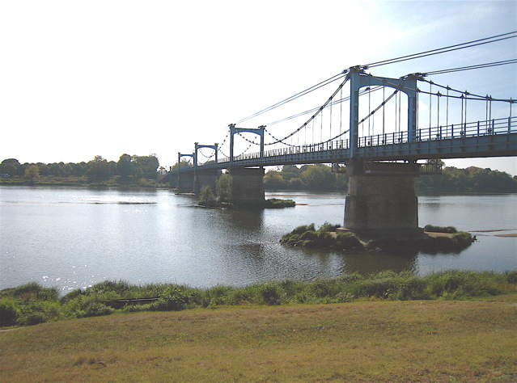
Vendredi, en route pour Cervolix. Un petit arrêt-déjeuner à Châteauneuf-sur-Loire, mon point de passage favori de la Loire par ce pont suspendu à la technique moderne mais encore pittoresque...

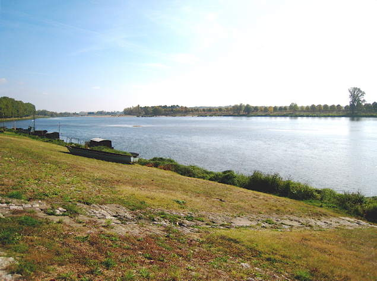
Le port tel qu'on le concevait, un talus pentu bien régulier sur lequel on traînait les gabarres !

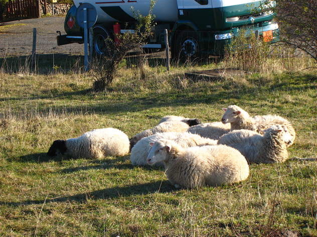
Arrivée sur le plateau de Gergovie qui domine Clermont-Ferrand, les moutons nous attendent patiemment...

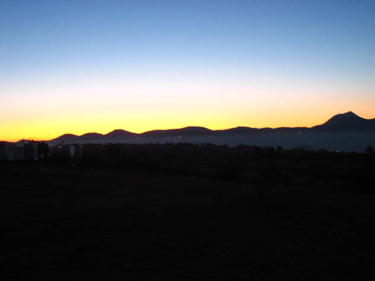
Le soleil se couche, derrière la Chaîne des Puys...

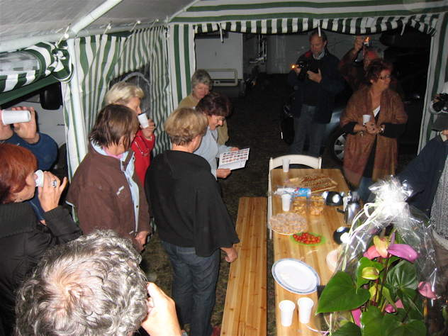
Au soir, on fête l'anniversaire (un compte rond...) de Monique Arus... On lui remet d'abord la liste, avec les portraits des généreux bienfaiteurs...

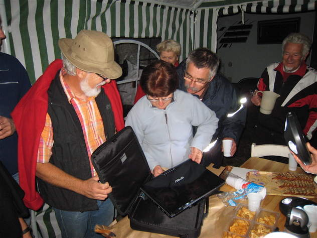
Et le cadeau, un PC portable dernier cri... qui permettra de passer en boucle des photos pour le reste de la soirée !

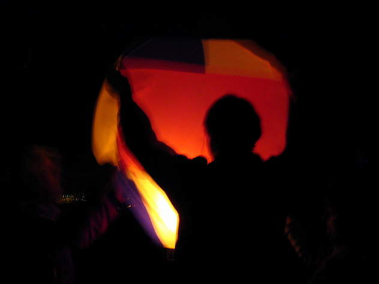
Pratiquement pas de vent, ce vendredi soir, et j'ai à peine pu faire voler quelques minutes ma Manta Indoor... Alors, c'est un bon moment pour les montgolfières en papier !

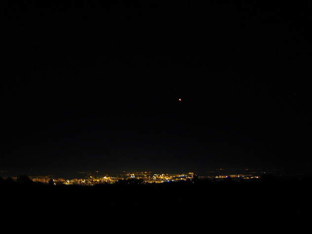
Et voilà, c'est parti au-dessus des lumières de Clermont-Ferrand, là en bas... On verra une étoile de plus, longtemps... dans la Grande Ourse !

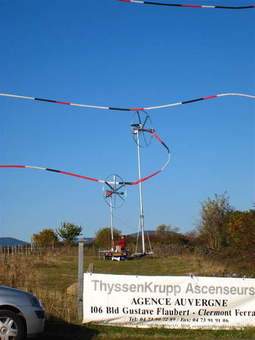
Des éoliennes sont montées en bas du plateau, par le berger, ou par un marchand d'éoliennes ? En tout cas, le premier cerf-volant à voler, doté de longues queues, se prend dedans illico...

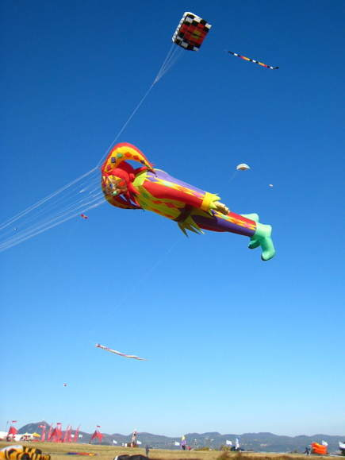
Jos a fait de la route, mais il est déjà là, avec son splendide Gilles de Binche, ou d'ailleurs, je ne sais pas...

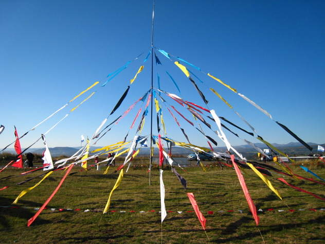
Michel Trouillet a étalé d'immenses Jardins éoliens sur toute la largeur du haut du plateau, avec sa vibrante pyramide aux mille prières tibétaines.

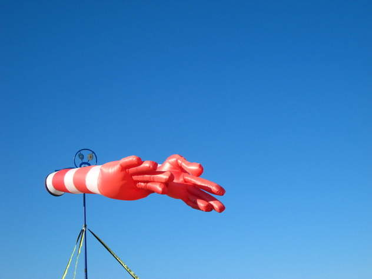
Il a aussi installé sa sculpture animée "MAPA"... qui vous tend les bras !

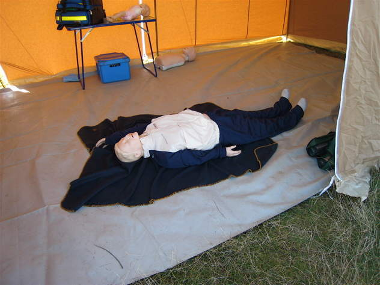
Aïe, un triste accident dans un festival ? Meuh non, c'est un mannequin destiné à enseigner le massage cardiaque et le bouche-à-bouche...

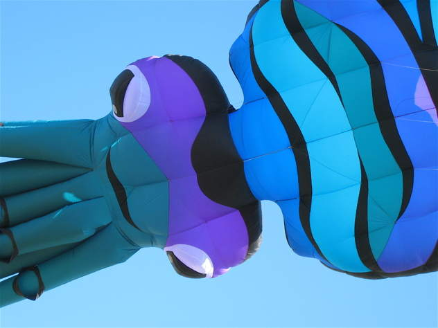
Les AWITAS sont là avec leurs grands gonflables comme ce beau calmar !

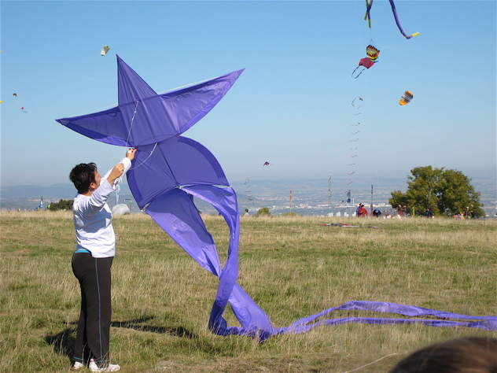
Madame a eu son petit cadeau de Vent de Folie : un Folyang tout neuf !

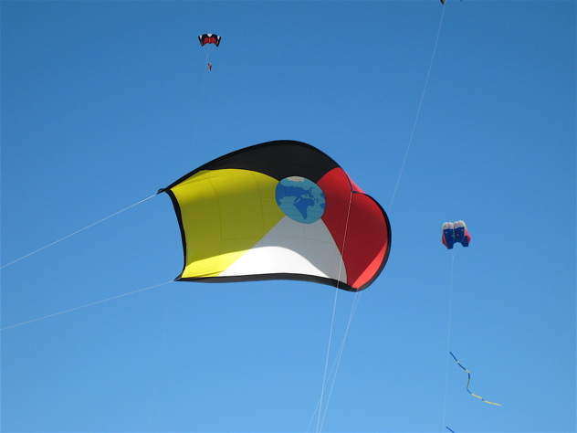
Michel a mis en l'air sa petite bâche aux couleurs du monde (la Planète bleue et les 4 couleurs de l'humanité : noir, blanc, jaune et rouge). Il y a trop de vent pour la vraie, dont le globe central est en relief et de... 8 m de diamètre !

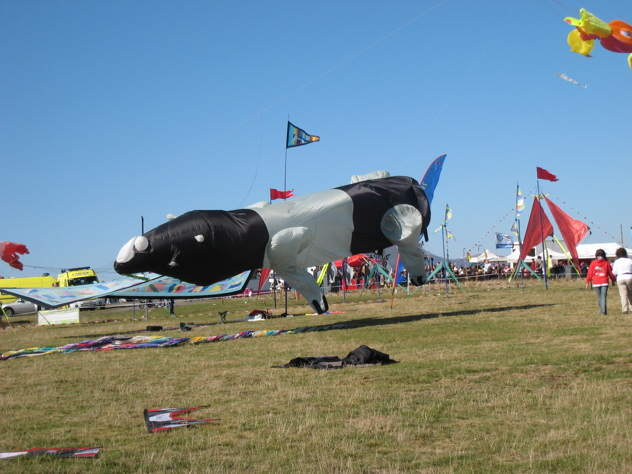
Devinez quel est l'animal représenté ? Bon, je vous le dis, mais vous voyez bien sa corne sur le nez : c'est un rhinocéros...

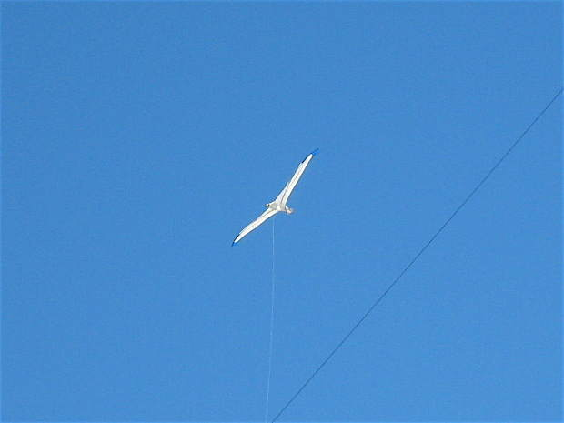
Aujourd'hui, pas mal de vent, mon Albatros 2 restera en l'air jusqu'au soir quand je le rentrerai ! Exception, une chute momentanée due à un accrochage avec un voisin...

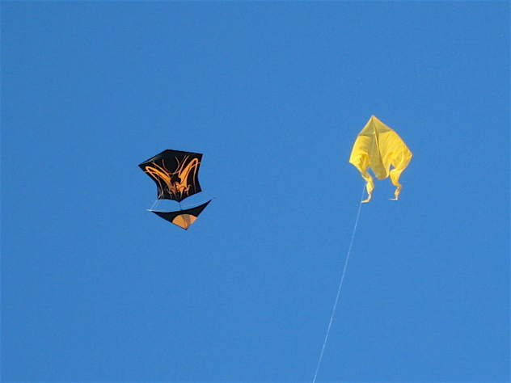
Les CVs de Tintin : un delta jaune pas à lui, et un roller au joli dessin et de gros vent (c'est rare, d'habitude on les utilise par pétole)...

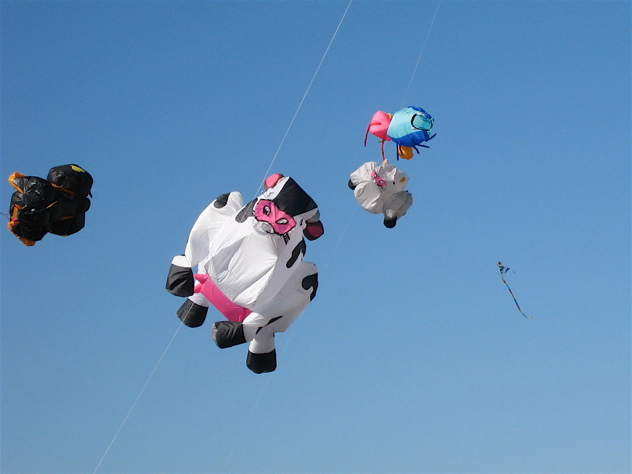
Pendue à un fil, cette vache a les épaules carrées d'un taureau, mais à voir sa somptueuse mamelle, c'est bien une vache...

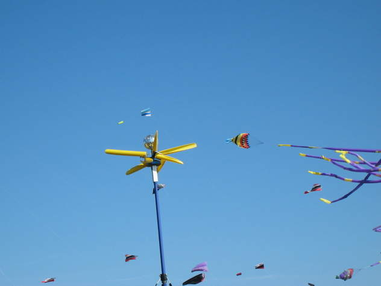
Michel a aussi un moulinet un peu spécial à base de demi-tubes judicieusement orientés....

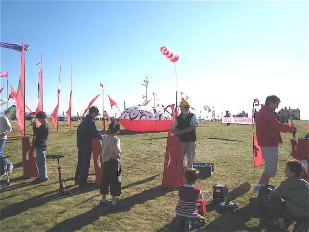
Son pas de tir des fusées n'a pas désempli : il s'agit d'atteindre la lune (gonflée, au fond, avec ses cirques) avec des fusées propulsées par l'air comprimé ! A droite, on voit le compresseur, utilisé par les moins costauds...

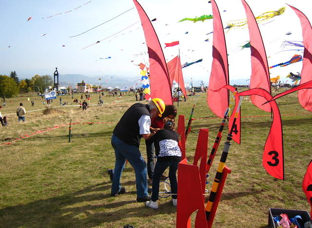
Pour les plus costauds, une pompe à main permet d'obtenir la pression nécessaire... Mais Michel doit se dévouer pour obtenir les 120 PSI indispensables...

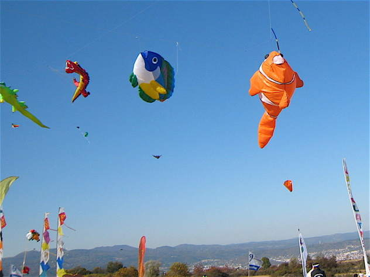
Jean-Pierre Schaefer (avec un seul F) monte ses poissons : un Nemo classique, et un autre très beau avec sa nageoire dorsale bien gonflée, du même auteur que les bancs de poissons des JdVs ...

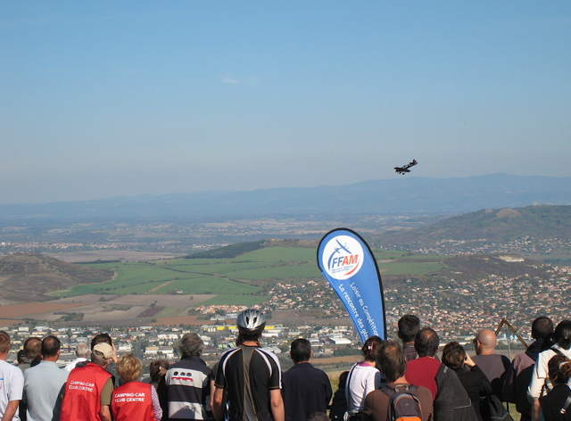
Au bas du plateau, exhibitions de voltige... Ca doit être grisant, on peut voler plus bas que le public !

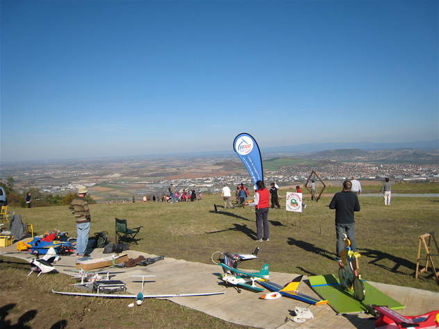
Au-dessous, la piste des maquettes avec des réalisations très variées : des avions, des planeurs, des ailes volantes, des Schtroumpfs pédaleurs...

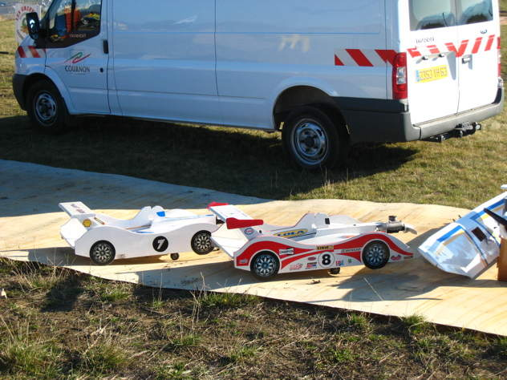
Il y a même des voitures échappées des 24 h du Mans... et elles volent !

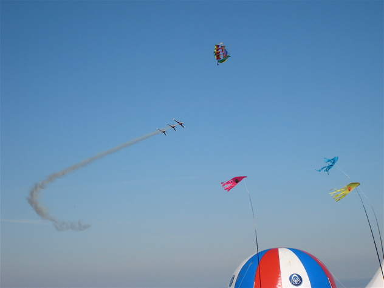
Il vient aussi une patrouille de 3 VariEzes, ces drôles d'avions avec une aile à l'arrière et un empennage canard à l'avant !

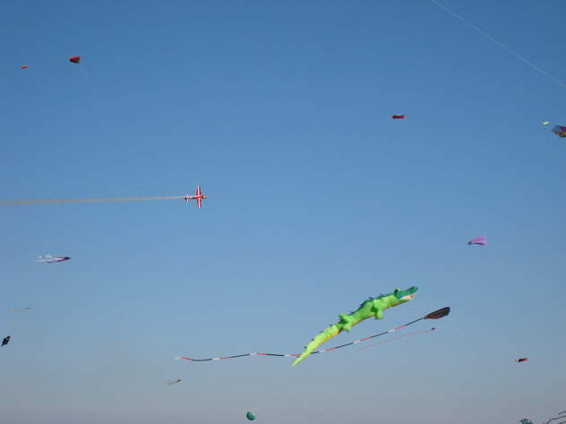
Un solo nous montrera aussi une voltige violente avec un appareil très puissant capable de voler... à l'arrêt, pendu sous l'hélice !

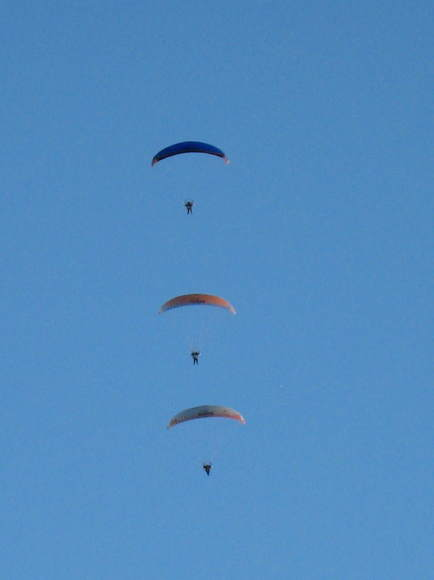
Une autre patrouille, plus calme qui vole aussi en stationnaire dans l'ascendance éolienne due à la côte du Plateau de Gergovie !

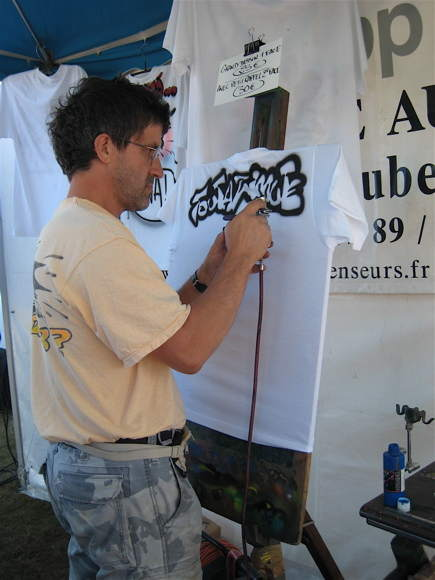
Le peintre sur T-shirts a pris assez de commandes pour un mois de travail ! Il crée les sujets caricaturaux très réussis lui-même en fonction des particularités des cervolistes qui demandent !

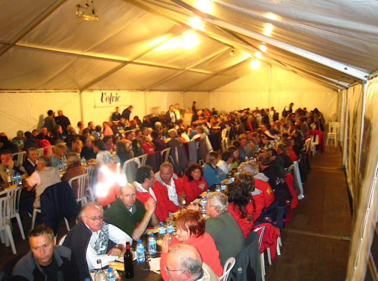
Dîner du samedi soir dans le grand barnum qui évite des trajets retour risqués en voiture !

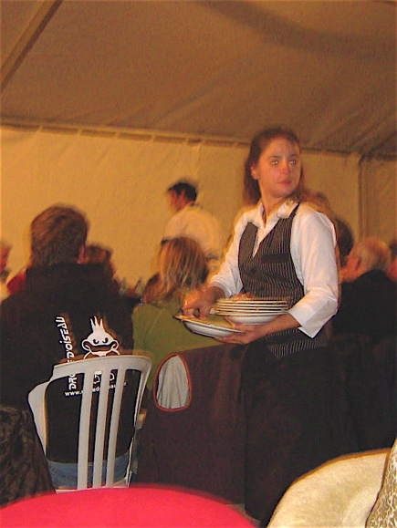
Et nous sommes servis (et desservis) à table en particulier par cette charmante demoiselle ultrarapide, un peu trop pour mon appareil et la luminosité limitée...

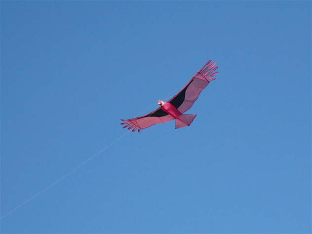
La météo annonçait du vent plus faible ce dimanche, en fait il a soufflé comme un fou dans la nuit et ne tombera qu'en fin d'après-midi. Mon Condor est content, ça lui va...

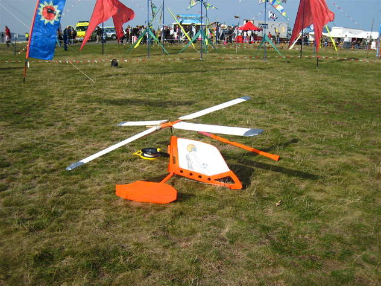
Sur le terrain, l'autogire décrit dans le Lucane... L'auteur dit qu'il l'a modifié pour le rendre plus esthétique...

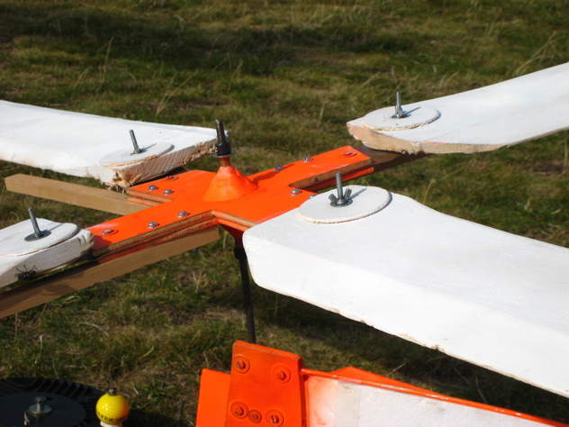
Le rotor est sans doute opérationnel et efficace, mais la finition de la tête est encore à peaufiner...

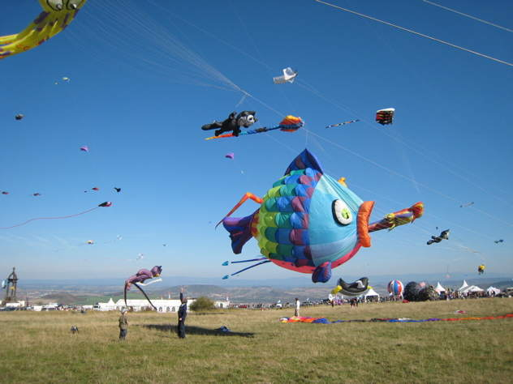
Au sol, ou presque, ce Fugu qui me plaît toujours, avec ses écailles en relief !

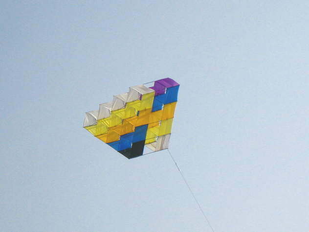
Et Tintin fait voler ce simili Bell, bien plus toilé puisqu'il est doté de surfaces carrées et non triangulaires...

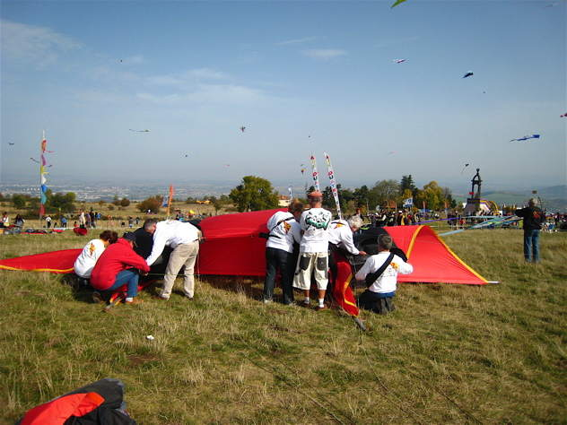
Les Plein Vent ont créé collectivement cet énorme cerf-volant, dont la forme est encore indéterminée... L'armature est en tube alu de bien 7 cm de diamètre au jugé !

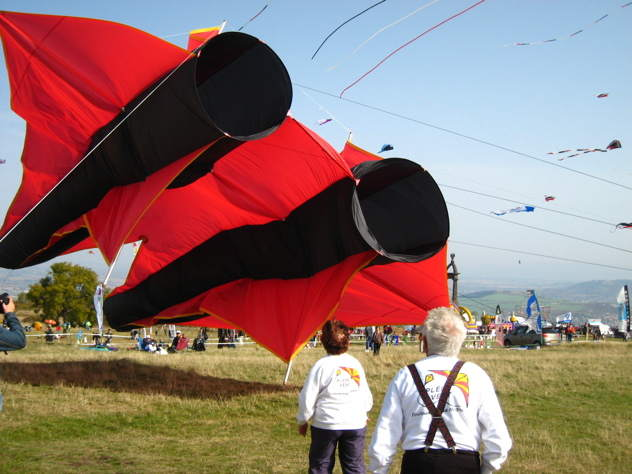
Attention, il ne touche plus le sol que par un petit coin, mais il va retomber avec des conséquences fâcheuses pour la suite...

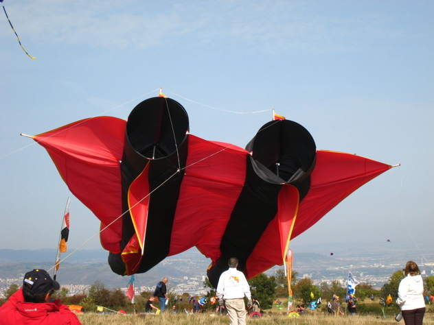
Ca y est, il vole, mais le tube transversal a été tordu (!) et il faut tirer à gauche sur la bête pour qu'elle se maintienne. Dommage, mais il est quand même monté à une dizaine de mètres !

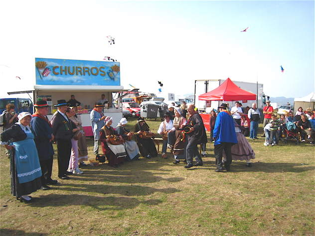
A part les cervolistes et maquettistes, il y a aussi divers stands, buvettes etc. et un groupe folklorique avec vielles à roues, chanteurs et danseurs !

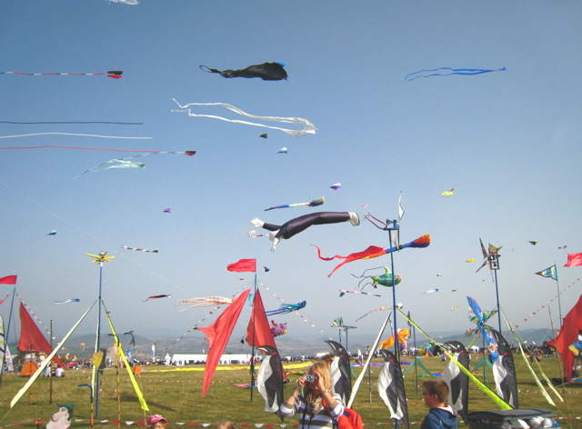
Sur les Jardins innombrables et variés de Michel, des cerfs-volants innombrables et variés, et au-dessus encore, le ciel bleu et le soleil !

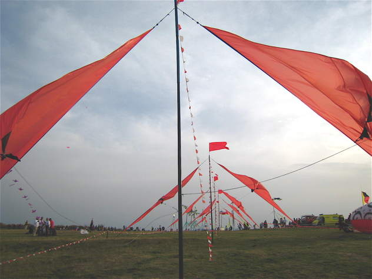
Dans les Jardins, une belle allée de voiles trinquettes-jumelles... Elles ont toutes été déchirées au bord de fuite qui a battu dans le vent de cette nuit ! On avait bien essayé de tendre les écoutes, mais ça tirait trop, le plateau aurait décollé !

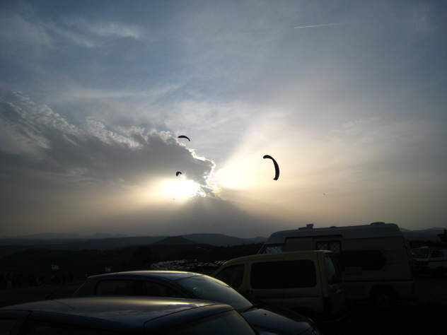
Il y avait aussi une surface pour que les tractionnistes puissent rouler. Leurs voiles forment un beau spectacle dans un des rares nuages de la journée !

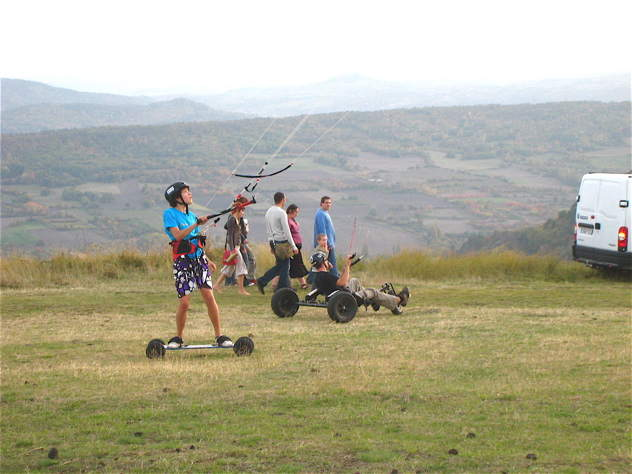
Il y avait des chars, mais aussi des skates, et même des voiles sans rien à rouler, pour le plaisir de la traction !

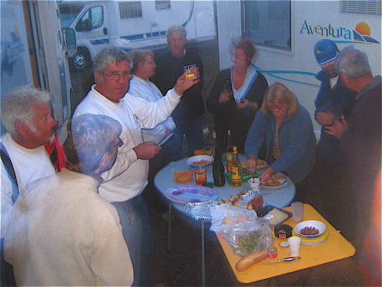
Dimanche soir, avant de se quitter, les camping-caristes se font comme d'habitude un petit pot-dinatoire, ces dames ont apporté un tas de cakes et préparé d'innombrables canapés... Ma bouteille de pomme-châtaigne a été bien appréciée, surtout que Bernard Arus la voulant pour y mettre des boissons corrosives, il fallait la finir !

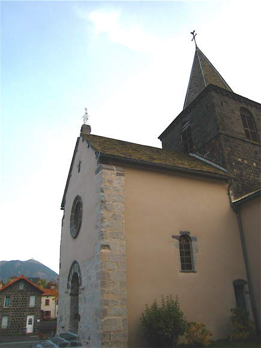
Lundi matin, donc, petit tour par le Parc des Volcans à la découverte. Je contourne le Puy-de-Dôme en admirant les églises locales. Celle-ci, par exemple, dont le clocher en lave noire est très impressionnant !

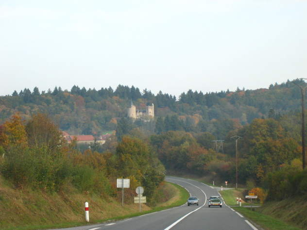
Et puis à la sortie d'Aubusson, sur la colline, une villa en forme de château qui ne témoigne pas de la modestie des goûts du bâtisseur... Ensuite, je rejoins l'autoroute pour rentrer sans trop de fatigue à la maison...
Cervolix : Une belle année, avec du soleil, du vent régulier et une température clémente... Un festival à ne pas manquer, même si un de ces ingrédients peut faire défaut comme ça arrive !

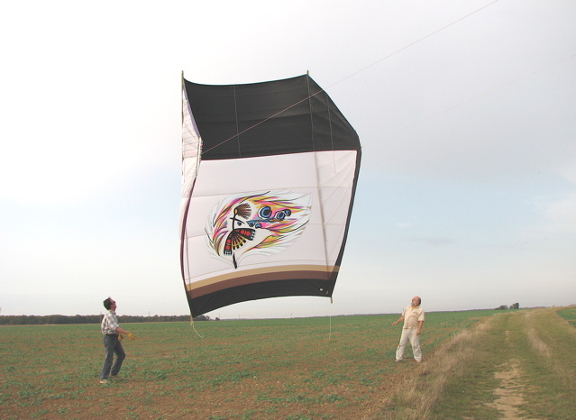
PS : Pendant mon absence, mon copain Sylvien Venet et notre bande de fous de la Beauce ont réussi à faire voler son Sled "Solitude". Banal, me direz-vous ! Mais le sien fait 10 m d'envergure posé à plat, 6 m de long, 45 m2 de surface !